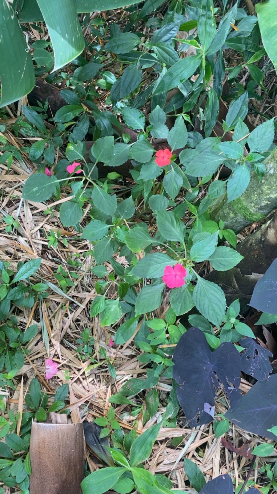
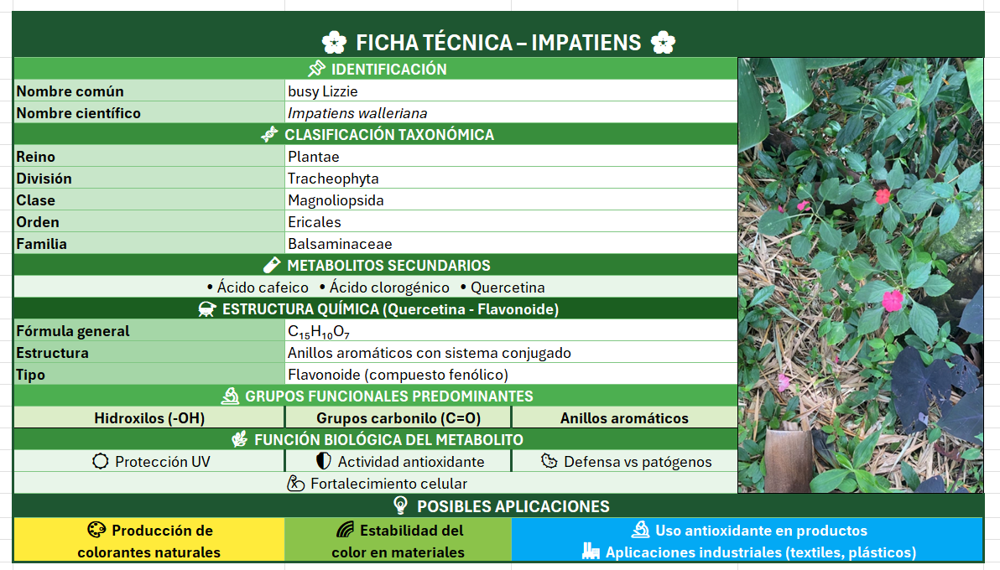

Nombre común: Busy Lizzie
Nombre científico: Impatiens Walleriana
Familia Botánica: Balsaminaceae
Ubicación en el sendero: entre las guaduas

La Impatiens walleriana (Busy Lizzie) es una planta ornamental de la familia Balsaminaceae que se desarrolla principalmente en ambientes húmedos y sombreados, siendo común en jardines y zonas verdes por su fácil adaptación y su abundante floración. Desde el punto de vista químico, esta especie produce metabolitos secundarios como el ácido cafeico, el ácido clorogénico y la quercetina, los cuales pertenecen a los flavonoides y compuestos fenólicos. Estos presentan estructuras aromáticas con sistemas conjugados y grupos funcionales como hidroxilos (-OH) y carbonilos (C=O), que les otorgan alta reactividad química. Gracias a estas características, cumplen funciones importantes como la protección frente a la radiación ultravioleta, la actividad antioxidante y la defensa contra microorganismos patógenos, contribuyendo así a la supervivencia y adaptación de la planta en su entorno.
